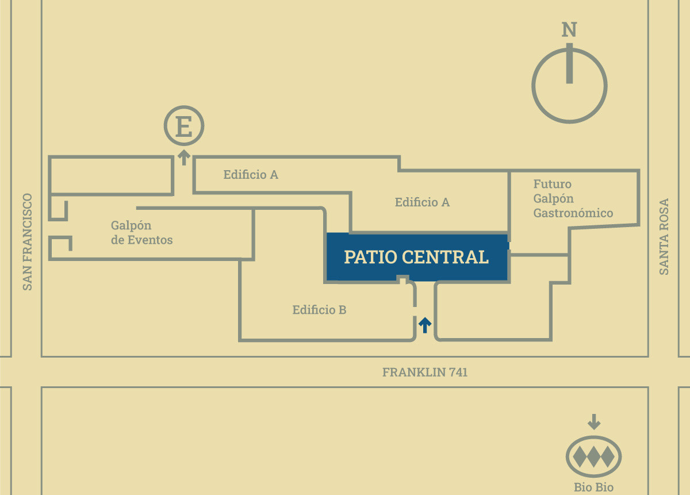

Patio Central
En este sector de Factoría Franklin se recibe diariamente a los muchos visitantes que recorren las diferentes fábricas y talleres. Este patio es muy especial, ya que permite una pausa con una atmósfera tranquila y de buen ambiente.
Dos espacios dentro de un edificio patrimonial de 1940, en pleno Barrio Franklin, para acciones públicas o privadas.
En este sector de Factoría Franklin se recibe diariamente a los muchos visitantes que recorren las diferentes fábricas y talleres. Este patio es muy especial, ya que permite una pausa con una atmósfera tranquila y de buen ambiente.
Espacio versátil, es el principal foco de las muchas actividades dentro de Factoría Franklin. Cuenta con una infraestructura equipada y amplia para el desarrollo de diferentes acciones públicas o privadas.
El Patio Central está al centro del edificio, con acceso directo desde Franklin 741. El Galpón de Eventos está hacia San Francisco.

personas en la primera edición de Bacán tu Casa, feria de diseño y decoración.
variedades de cervezas artesanales e hidromiel en la Fonda Medieval Party.
Festival del Vermut en Chile, realizado en el galpón techado de la Factoría.
de Santiago IPA Fest 2026, con cervecerías artesanales y música en vivo.
Completa el formulario y te responderemos a la brevedad.
También puedes escribir a operaciones@factoria-franklin.cl
El equipo de operaciones revisará la disponibilidad del espacio.